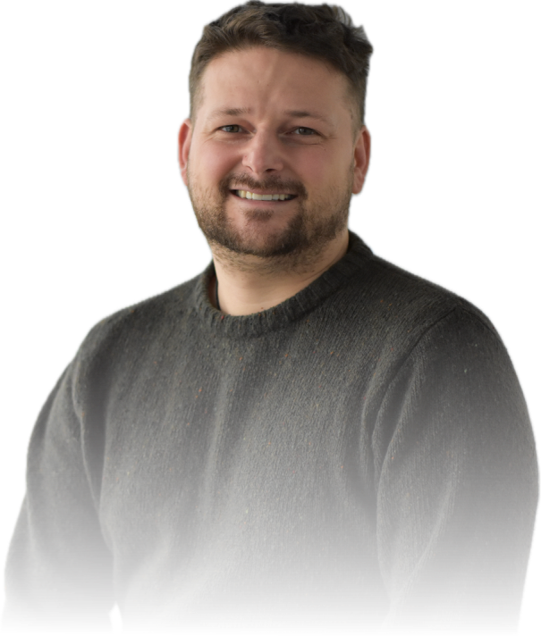

I am a Ph.D candidate at ETH Zurich shared between the Institute of Microbiology and the Institute of Biogeochemistry and Pollutant Dynamics. I did my Bachelor’s in Ecology at the University of Vienna, and attended the University of Algarve for my Master's in Marine Biology afterward. My master's thesis has been focused on taxonomic profiling of the prokaryotic community associated with a soft coral. Since 2019 I am employed at ETH Zurich, where I started out as an intern and continue my work as a Ph.D within the field of global marine plankton diversity and the question of how diversity relates to ecosystem functions, with a special emphasis on aspects affecting global biogeochemical cycles in the ocean. To do so I use Species Distribution Models that have been developed for modelling regions, that suffer from sparse observations and uneven sampling efforts.

Selected speaker: Workshop ”Microbial Community Ecology: Bridging Theory and Obser- vations.
Max Planck Institute of Evolutionary Biology in Pl ̈on, Germany (July 14th of July 2023).
Poster: ASLO Conference Palma de Mallorca (7th of June 2023).
Invited speaker: FORMAL winter webinar series on the observation and modeling of ocean
life (2nd of February 2022).
Ecological analysis: working with species data, niche analysis, diversity indices and clustering algrorithms
GIS analysis: satelite data and model output data, experienced with netCDF files
BIG DATA: Because work on global scale Familiar with options to work with large data increasing efficiency
Species Distribution Models: binary or continuous response variables, regression and machine learning based methods
Data visualization and mapping tools:
Web application developement: mainly worked with plotly and created online accessible interactive elements for specific research questions
M.Sc - Thesis: Xinhang Li, October 2022 - April 2023, ETH Zürich
Trends in Marine Plankton Biodiversity over the 21st Century under Different Climate Change Scenarios
M.Sc - Thesis: Poli Giacomo, November 2022 - May 2023, ETH Zürich
IBP - Committee: Part of the organizing committee for the IBP Congress at ETH Zürich in April 2024.
Dominic Eriksson, Nicolas Gruber, Fabio Benedetti, Damiano Righetti,
Lucas Paoli, Guillem Salazar, Shinichi Sunagawa, Meike Vogt, in prep. Nitrogen
fixation rates increase with diazotroph richness in the global ocean.
Keller-Costa, T., Eriksson, D., Gon ̧calves, J.M., Gomes, N.C., Lago-Lest ́on, A. and Costa, R., 2017.
The gorgonian coral Eunicella labiata hosts a distinct prokaryotic consortium amenable to cultivation.
FEMS Microbiology Ecology, 93(12), p.fix143.